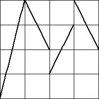
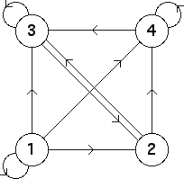

|  |
6. (b)
| From the graph we see the allowed bin transitions are
|
| The occupied length 2 addresses are 11, 21, 23, 31, 32, 33, 34, 41, 42, and 44. |
| The empty length 2 addresses are the remaining six 12, 13, 14, 22, 24, and 43. |
Here is the transition graph.
|  |
Return to Exercises.